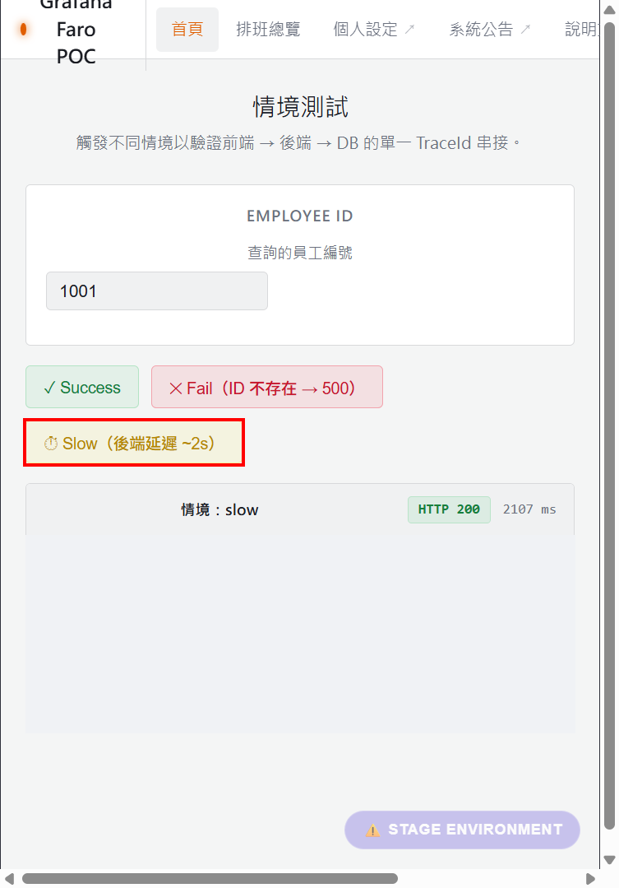

工作導向插課 · 設計、審查與除錯 Faro 自動導入 Skill · 不改變主線進度
你已接觸過 Browser runtime、Faro 初始化與 DevTools 的概念。本課只用到最小橋接：Browser 可以送兩種不同的 HTTP request；一種去業務 Backend，一種把 Faro 收集的資料送去 receiver。若 DevTools 面板仍陌生，先看 DevTools 面板速查，再回來做 Lab。
案例界線：下文的前後端 trace 與 frontend error 都來自 Jeter stage demo。Foreman 截圖只用來教 DevTools 畫面位置；Foreman 的 click payload 是另一個 runtime example，不是 Jeter trace 的一段。
拿到陌生 repo，第一步是找出應用在哪裡啟動、HTTP 從哪裡送出、Faro 是否已存在。若先假設每個專案都用同一種 framework 或 HTTP client，就可能加了程式卻沒進入真正的執行路徑。
| 先找 | 要回答的問題 | 找不到時 |
|---|---|---|
| framework、lockfile、build script | 應用如何啟動與驗證？ | 先查 repo 的既有慣例；不要憑範例選指令。 |
| app entry point、Faro dependency／初始化 | 觀測程式是否已在 Browser 啟動？ | 才考慮最小導入；已有設定先檢查，避免重複初始化。 |
| runtime config、backend base URL | 當前部署實際打哪個 API？ | 向專案取得 environment-specific URL；不要硬編碼 Jeter URL。 |
fetch、XMLHttpRequest、axios、custom client | 真實 business request 由誰送出？ | 追 wrapper 與實際 Browser Network；不要只搜尋 fetch。 |
Foreman 是 Angular，Jeter 是 React；兩者的入口與 runtime config 做法不同。Foreman source evidence、Jeter source evidence 提供真實對照。這些是辨識方法的例子，不是所有 repo 必須照抄的檔案路徑。
假設使用者按下 Jeter 的 Slow 按鈕。Browser 會向 backend 取資料；同時 Faro 會把觀測資料送到 /alloy。兩個 request 的目的地與用途都不同。
Path A｜業務 API（傳遞關係）
Browser 中的 HTTP client span
└─ sends GET /api/scenario/slow + traceparent → Backend API
Path B｜觀測資料（交付記錄）
Browser Faro
└─ sends POST /alloy → Alloy Faro receiver → Collector → Tempo / LokibackendUrls 是讓 tracing instrumentation 判斷哪些 business API URL 可以帶 trace context 的設定概念；它不是 Alloy receiver URL。traceparent 只攜帶兩個 runtime 之間重建關係所需的 ID，不會把整個 frontend span 送到 backend。Frontend span 要在 Tempo 出現，仍需要 Path B 的 telemetry 交付。詳見 trace context evidence 與 traceparent 速查。
一個 span 是一次操作的記錄。trace ID 識別整次跨系統工作；span ID 識別其中某一次操作；parent span ID 指向上一層操作。Browser 與 Backend 不共享記憶體，所以 Browser 必須把上游 ID 放進 business HTTP request 的 header。

2026-09-20 的 Browser Network 紀錄到真正的 GET /jeter-faro-trace-demo-backend/api/scenario/slow，HTTP 200，request header 為：
traceparent: 00-6faa6779a2970a3f82ad77e9ab9f4eb7-483e269e249ac6b4-01
└──────────── trace ID ────────────┘ └─ caller span ID ─┘再用該 trace ID 查 Grafana 的 Tempo：frontend SPAN_KIND_CLIENT span ID 是 483e269e249ac6b4；backend SPAN_KIND_SERVER span ID 是 bcaf1c3a1ff7cb07，其 parent span ID 正好是 483e269e249ac6b4。兩者同屬 6faa6779a2970a3f82ad77e9ab9f4eb7。Tempo 原始格式以 base64 表示 span ID；這裡轉成 hex 才與 header 比對。
同一個 trace ID：6faa6779a2970a3f82ad77e9ab9f4eb7
Frontend client span A：483e269e249ac6b4
└─ sends traceparent(T, A) on business GET → Backend
Backend server span B：bcaf1c3a1ff7cb07
└─ records parentSpanId = A這才證明這一筆 Jeter request 的 runtime join；backendUrls、Backend OTel 設定或 request HTTP 200，各自都不足以單獨證明 join。完整核查與限制、Browser Network 去敏紀錄、Tempo span 紀錄。
做什麼：在有授權的 Jeter stage demo 開啟 DevTools → Network，啟用錄製並清空舊列；以測試身分進入，按一次 Slow。用 scenario/slow 篩選，選 GET 那列，不選 /alloy POST 或 OPTIONS。
看哪裡：Headers → General 核對 URL、method、status；再展開 Request Headers 找 traceparent。它的第二段是 trace ID，第三段是 caller span ID。
正確時：本次請求有 header；把當次新 ID 記到私人筆記。若沒有，先檢查實際 API URL 是否匹配 propagation 設定、HTTP client 是否受 tracing instrumentation 覆蓋，或 Console 是否有 CORS 錯誤。HTTP 200 只證明 API 成功。
目前沒有保留 Jeter traceparent 的真實 DevTools UI 截圖，因此此處用既有 Foreman 真實 Network 畫面教面板位置，用 Jeter 原始 Network 紀錄教數值；沒有把文字摘要偽裝成 DevTools 截圖。Lesson 6 的 DevTools 圖解有 Headers／Payload／Status 的進一步操作示例。
做什麼：到有權限的 stage Grafana Explore，選 Tempo datasource，把 Lab 1 的當次 trace ID 貼進 trace ID 查詢欄；將時間範圍包含剛才操作的時間。
看哪裡：先確認查到的是同一個 trace ID，再展開 Service & Operation。找 frontend 的 HTTP client span、backend 的 server span；在 span detail 或原始 trace 檢查 frontend span ID 與 backend parent span ID 是否相同。
正確時：兩個 service 在同一條 trace，trace ID 相同，而且 backend parent 指向 frontend client span。若只有 backend，優先查 frontend telemetry export；若只有 frontend，查 header、backend context extraction 和 backend export。查不到任何資料時先核對 datasource、時間範圍與 ID。


Browser Console 看得到錯誤，只證明 Browser 產生錯誤。Faro 必須捕捉它、送出 telemetry；receiver 接受後，資料還須進入儲存，Grafana 才查得到。2026-09-20 在 Jeter stage demo 產生一筆不改動業務資料的受控 uncaught Error，marker 為 OTEL_FRONTEND_EVIDENCE_20260920_0415。這是核查用標記，不是應用功能。
| 邊界 | 該次觀察 | 能證明到哪裡 |
|---|---|---|
| Browser error | Chrome Runtime.exceptionThrown 有 marker | Browser 確實發生錯誤。 |
| Faro capture／送出 | POST /alloy 的 exceptions[] 含 marker；app 為 Jeter frontend | Faro 把該錯誤放進 outbound payload。 |
| Receiver | 同一 request ID 12564.15 回 HTTP 202 | receiver 接受 request；不代表 storage 成功。 |
| Storage／Grafana | Loki query 回一筆相同 service 與 marker 的 exception log | 該筆資料可由 Grafana 實際查詢。 |
部署設定顯示 Alloy → Collector → Loki 路徑；這次沒有取得該單筆錯誤在 Collector receive/export 的 metrics 或 logs。因此「經每個 Collector 處理節點」是根據設定與最終 Loki 紀錄的推論，不能寫成逐跳 runtime 實證。error runtime evidence、pipeline 設定 evidence。
既有受控錯誤是調查時在 demo page 觸發，沒有觀察到供 learner 安全重做的 error 按鈕；不要在正式應用任意注入 exception。此段請讀已保存的 去敏 Browser 紀錄：先找 Console exception marker，再找同 marker 的 POST /alloy、exceptions[] 和同 request ID 的 202。原始 payload 因可能含身分／session 欄位而未保存。

events[] click，不是 Jeter error；Jeter error 的欄位是 exceptions[]，由去敏 Network 紀錄證明。
做什麼：在 stage Grafana Explore 選 Loki。使用已驗證的 query；時間範圍涵蓋 2026-09-20 04:03 Asia/Taipei（UI 可能以 UTC 顯示，對應 2026-09-19 20:03 UTC）。
{service_name="jeter-faro-trace-demo-frontend"} |= "OTEL_FRONTEND_EVIDENCE_20260920_0415"看哪裡：result count 與 log row 的 marker、kind=exception、level=error、timestamp。這些值把 Grafana result 對回 Browser 的 error。
正確時：核查當時查到 Total: 1。若現在查不到歷史紀錄，先檢查 retention、時間範圍、datasource、service label；歷史資料可能已到期。當前結果必須依當前查詢判斷。


既有 Foreman dashboard 的 service query 與本次 Jeter service 不同；先前在限定 24 小時查詢 Foreman label 得到零筆，不代表 Jeter 沒資料，也不代表 dashboard 已更新。本課用上述 Jeter Loki query 驗證當次 error；沒有修改 dashboard。Grafana UI runtime evidence。
Agent 的通用工作是辨識、最小修改、逐層驗證。具體 URL、身份資料、業務事件欄位則由各專案決定。下面是設計 Skill 時可直接檢查的順序，不是要把 Jeter 或 Foreman 程式碼原封不動貼進所有 repo。
| Agent 步驟 | 範圍 | 找不到／失敗時的決策 |
|---|---|---|
| 1. 辨識 framework、package manager、build/test script | 通用 | 先讀 repo 慣例；無法確定時請專案提供建置方式。 |
| 2. 找 app entry point、Faro dependency、現有初始化 | 通用 | 沒有才導入；已有則保留有效選項，避免雙重初始化。 |
| 3. 找 runtime config、HTTP client 與實際 backend base URL | 通用方法；值依專案 | 檢查 fetch／XHR／axios／wrapper；URL 不明時不可猜。 |
| 4. 檢查 error capture、API tracing、propagation URL pattern | 通用方法；pattern 依專案 | 分開檢查 Browser error、business request header、Faro outbound。 |
| 5. 保留業務 instrumentation，只補缺的程式 | 通用原則；欄位依專案 | Foreman 的 data-link-name、subsystem 不可變成通用 requirement。 |
| 6. 依 repo scripts build/test；在 Browser 核對 payload、status | 通用 | build 成功不等於 runtime 成功；找第一個失敗邊界。 |
| 7. 查 receiver／Collector／storage／Grafana | 通用；權限／datasource 依環境 | 202 只證明 receiver；用對應紀錄查下游。 |
| 8. Backend 已有 tracing 時查 same trace／parent | 條件式通用 | 用實際 request 的 trace ID，不拿 config 當 join 證明。 |
有些事情可以由 Agent 從 repo 自動判斷，例如 lockfile、入口、現有依賴與 HTTP wrapper。實際部署 URL、允許加 header 的 CORS 設定、可用的測試 error path、Grafana 權限、業務欄位語意可能需要 project-specific input。若公司將來制定統一 KPI，那是額外的 company convention；不應偷渡進通用 Faro Skill。18 步 evidence-backed checklist。
Grafana 沒有 error
Browser Console 有 error？
└─ Faro POST 的 exceptions[] 有同一 marker？
└─ receiver 接受？
└─ Collector 收到／送出？（這次沒有單筆逐跳證據）
└─ Loki 有同一 marker？
└─ Grafana datasource、時間、query 正確？Frontend／Backend trace 沒接起來
Browser 有 client span？
└─ business request 有 traceparent？URL pattern、HTTP client、CORS？
└─ Backend server span 有 extract context 與相同 trace ID？
└─ Backend parentSpanId = frontend span ID？
└─ 兩邊 span 都 export 到 Tempo，Grafana 查對 trace？每走一步先寫下預期、實際觀察、證據位置。若只有設定就標「設定已驗證，runtime 未證明」；若 Browser POST 回 202，就只說 receiver 接受；若 Tempo 看到同 trace 且 parent ID 相同，才說這一筆 join 已證明。不要把某一環尚未調查寫成「已壞」。
traceparent，可以宣稱 Tempo 一定有完整 frontend + backend trace 嗎？data-link-name 寫成每個 repo 的必要欄位嗎？traceparent 傳關係；Faro /alloy POST 送觀測紀錄，兩條路徑要各自驗證。data-link-name／subsystem 是業務例子，不是通用 Faro requirement。你可以把自己在 Lab 取得的 trace ID、看到的 span tree 或找不到的第一個邊界帶回來問我；我們再依當次證據檢查你的判斷。